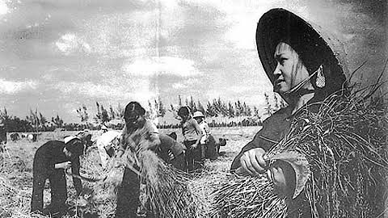
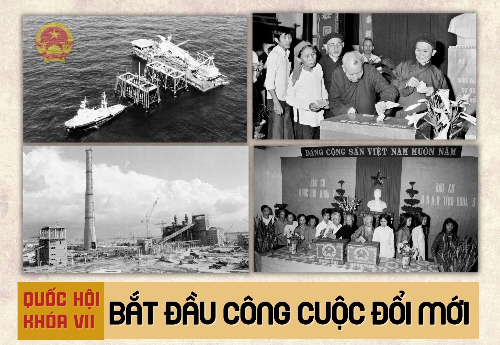
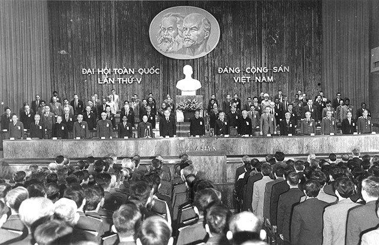
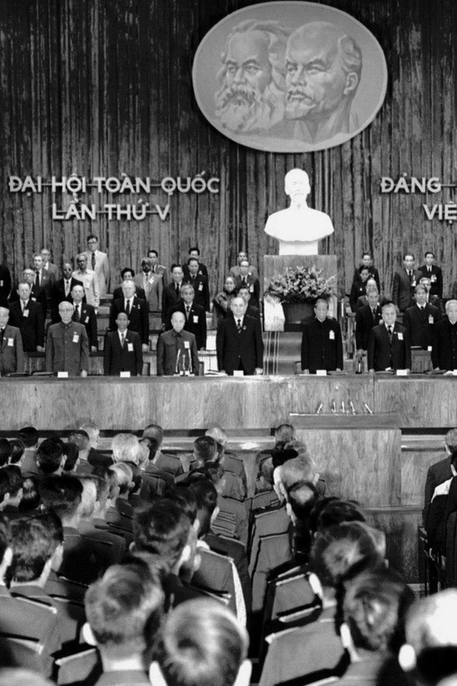
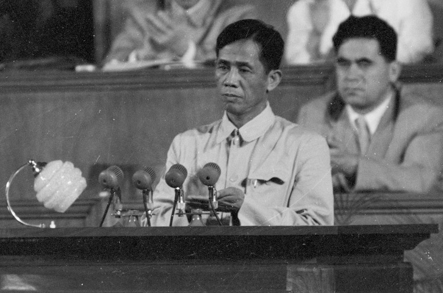

<style>

* {
    box-sizing: border-box;
    margin: 0;
    padding: 0;
}

html {
    scroll-behavior: smooth;
}

body {
    font-family: Arial, Helvetica, sans-serif;
    background: #fff8ef;
    color: #222;
    line-height: 1.7;
}


/* =====================================================
   THANH MENU
   ===================================================== */

nav {
    position: fixed;
    top: 0;
    left: 0;

    width: 100%;
    height: 64px;

    z-index: 9999;

    background: #8e0000;

    box-shadow: 0 3px 12px rgba(0,0,0,0.25);
}

.nav {
    width: 100%;
    height: 100%;

    display: flex;
    justify-content: center;
    align-items: center;

    gap: 55px;
}

.nav a {
    color: white;

    text-decoration: none;

    font-size: 16px;
    font-weight: 700;

    white-space: nowrap;

    transition: 0.3s ease;
}

.nav a:hover {
    color: #ffd05a;
    transform: translateY(-2px);
}


/* =====================================================
   HEADER / ẢNH NỀN
   ===================================================== */

header {
    position: relative;

    min-height: 700px;

    margin-top: 64px;

    display: flex;
    justify-content: center;
    align-items: center;

    text-align: center;

    color: white;

    background-image:
        url("https://cdnphoto.dantri.com.vn/g6ON2S1AyGqKQ78G-CfJzi5sqbI%3D/2026/01/15/dai-hoi-lan-thu-v-cua-dang-xay-dung-chu-nghia-xa-hoi-va-bao-ve-to-quoc-xhcn-cropped-1768462874366.jpg");

    background-size: cover;
    background-position: center;

    overflow: hidden;
}


/* LỚP ĐỎ PHỦ ẢNH */

header::before {
    content: "";

    position: absolute;

    inset: 0;

    background:
        linear-gradient(
            rgba(100, 0, 0, 0.62),
            rgba(130, 0, 0, 0.58)
        );
}


/* =====================================================
   NỘI DUNG HEADER
   ===================================================== */

.header-content {
    position: relative;

    z-index: 2;

    width: 100%;
    max-width: 1050px;

    padding: 40px 25px;
}


/* DÒNG NHỎ */

.small-title {
    font-size: 15px;

    font-weight: 700;

    letter-spacing: 3px;

    color: #ffd66b;

    margin-bottom: 25px;

    text-transform: uppercase;

    text-shadow:
        2px 2px 5px rgba(0,0,0,0.8);
}


/* =====================================================
   TIÊU ĐỀ CHÍNH
   ===================================================== */

header h1 {
    max-width: 1000px;

    margin: 0 auto 28px;

    font-size: clamp(38px, 5.3vw, 68px);

    line-height: 1.15;

    font-weight: 800;

    text-transform: uppercase;

    color: white;

    text-shadow:
        3px 3px 6px rgba(0,0,0,0.9);
}


/* =====================================================
   MÔ TẢ
   ===================================================== */

header p {
    max-width: 850px;

    margin: 0 auto 35px;

    font-size: 19px;

    line-height: 1.6;

    color: white;

    text-shadow:
        2px 2px 4px rgba(0,0,0,0.8);
}


/* =====================================================
   NÚT KHÁM PHÁ
   ===================================================== */

.hero-btn {
    display: inline-block;

    padding: 15px 32px;

    background: #f2ad00;

    color: white;

    text-decoration: none;

    font-size: 16px;

    font-weight: 700;

    border-radius: 30px;

    box-shadow:
        0 5px 15px rgba(0,0,0,0.3);

    transition: all 0.3s ease;
}

.hero-btn:hover {
    background: #ffc400;

    transform: translateY(-3px);

    box-shadow:
        0 8px 20px rgba(0,0,0,0.4);
}


/* =====================================================
   PHẦN NỘI DUNG CŨ
   ===================================================== */

main {
    max-width: 1100px;

    margin: auto;

    padding: 70px 20px;
}

section {
    margin-bottom: 80px;

    scroll-margin-top: 85px;
}

.ey {
    color: #b3131b;

    font-weight: bold;

    letter-spacing: 2px;

    font-size: 14px;
}

h2 {
    font-size: 40px;

    line-height: 1.2;

    margin: 10px 0 20px;
}

h3 {
    margin-bottom: 10px;
}

.lead {
    font-size: 18px;

    color: #555;
}

.photo {
    width: 100%;

    max-height: 700px;

    object-fit: cover;

    display: block;

    margin: 30px 0 8px;

    border-radius: 18px;

    box-shadow:
        0 10px 30px rgba(0,0,0,0.15);
}

.caption {
    text-align: center;

    color: #777;

    font-size: 14px;

    font-style: italic;

    margin-bottom: 25px;
}

.grid {
    display: flex;

    flex-direction: column;

    gap: 30px;
}

.card {
    background: #fffdf8;

    border: 1px solid #eadfce;

    border-radius: 18px;

    padding: 28px;

    box-shadow:
        0 8px 25px rgba(91,52,20,0.08);
}

.card img {
    width: 100%;

    height: auto;

    max-height: none;

    object-fit: contain;

    border-radius: 14px;

    margin: 15px 0 20px;
}

.num {
    font-size: 38px;

    font-weight: 900;

    color: #b3131b;
}

.timeline {
    border-left: 5px solid #e9c9c0;

    margin: 35px 0;

    padding-left: 30px;
}

.event {
    margin-bottom: 35px;
}

.year {
    font-weight: bold;

    color: #b3131b;

    font-size: 18px;
}

.callout {
    border-left: 6px solid #e0aa3e;

    background: #fff1cf;

    padding: 22px;

    border-radius: 10px;

    margin-top: 25px;
}

.compare {
    display: grid;

    grid-template-columns: 1fr 1fr;

    gap: 22px;
}

table {
    width: 100%;

    border-collapse: collapse;

    margin-top: 25px;

    background: white;
}

th,
td {
    padding: 14px;

    border: 1px solid #eadfce;

    text-align: left;
}

th {
    background: #f6eadc;

    color: #8e1018;
}

footer {
    background: #21191a;

    color: #ddd;

    text-align: center;

    padding: 30px;
}


/* =====================================================
   MOBILE
   ===================================================== */

@media (max-width: 800px) {

    .nav {
        gap: 22px;

        overflow-x: auto;

        justify-content: flex-start;

        padding: 0 18px;
    }

    .nav a {
        font-size: 14px;
    }

    header {
        min-height: 620px;
    }

    header h1 {
        font-size: 40px;
    }

    header p {
        font-size: 17px;
    }

    h2 {
        font-size: 30px;
    }

    .compare {
        grid-template-columns: 1fr;
    }
}


@media (max-width: 500px) {

    nav {
        height: 58px;
    }

    .nav {
        gap: 18px;
    }

    header {
        margin-top: 58px;

        min-height: 600px;
    }

    .header-content {
        padding: 25px 12px;
    }

    .small-title {
        font-size: 11px;

        letter-spacing: 1.5px;
    }

    header h1 {
        font-size: 30px;
    }

    header p {
        font-size: 15px;
    }
}

</style>


<!-- =====================================================
     HEADER
     ===================================================== -->

<header id="trangchu">

    <div class="header-content">

        <div class="small-title">
            NHÓM 3 - LỊCH SỬ ĐẢNG - LP6013.37
        </div>

        <h1>
            Đại hội Đảng lần thứ V (1982)
            <br>
            & các bước đột phá kinh tế trước Đổi mới
        </h1>

        <p>
            Những bước chuyển biến quan trọng của nền kinh tế
            Việt Nam trước thời kỳ Đổi mới
        </p>

        <a href="#boicanh" class="hero-btn">
            Khám phá hành trình
        </a>

    </div>

</header>


<!-- =====================================================
     MENU
     ===================================================== -->

<nav>

    <div class="nav">
        
        <a href="#trangchu">Trang chủ</a>

        <a href="#boicanh">
            Bối cảnh
        </a>

        <a href="#daihoi">
            Đại hội V
        </a>

        <a href="#dotpha">
            Bước đột phá
        </a>

        <a href="#ynghia">
            Ý nghĩa
        </a>

    </div>

</nav>

<main>

<!-- BỐI CẢNH -->

<section id="boicanh">

    <div class="ey"><h2>01 • BỐI CẢNH</h2></div>

    <h2>Vì sao cần tìm cách tháo gỡ?</h2>

    <p class="lead">
        Sau năm 1976, nền kinh tế Việt Nam gặp nhiều khó khăn,
        mất cân đối và cơ chế quản lý còn nặng tính hành chính,
        bao cấp. Sản xuất phát triển chậm, đời sống nhân dân
        còn nhiều thiếu thốn.
    </p>

    <div class="grid">

        <article class="card">
 

            <div class="num">1976–80</div>


            <h3>Khó khăn tích tụ</h3>
            <p>
                1976–1980, Việt Nam phải đối mặt với hậu quả nặng nề của chiến tranh, nền kinh tế nghèo và mất cân đối, thiếu lương thực – nhiên liệu – nguyên liệu, sản xuất tăng chậm, xuất nhập khẩu khó khăn và đời sống nhân dân còn nhiều thiếu thốn. Bên cạnh đó, chiến tranh biên giới và thiên tai cuối thập niên 1970 càng làm tình hình kinh tế – xã hội thêm khó khăn..
            </p>
        </article>

        <article class="card">

            <div class="num">1981</div>



            <h3>Quốc hội khóa VII</h3>
            <p>
                Năm 1981, Quốc hội khóa VII được bầu ngày 26/4/1981, bắt đầu nhiệm kỳ 1981–1987. Quốc hội tập trung củng cố bộ máy Nhà nước, khắc phục những khó khăn về kinh tế – xã hội, xây dựng pháp luật và tăng cường bảo vệ Tổ quốc.
            </p>
        </article>

        <article class="card">
            <div class="num">1982</div>



            <h3>Đại hội V</h3>
            <p>
                Đề ra nhiệm vụ phát triển kinh tế – xã hội
                trong kế hoạch 1981–1985.
            </p>
        </article>

    </div>
</section>

<!-- ĐẠI HỘI V -->

<section id="daihoi">

    <div class="ey"><h2>02 • ĐẠI HỘI V</h2></div>

    <h2>Đại hội đại biểu toàn quốc lần thứ V</h2>

    <p class="lead">


    <div class="caption">
        Đại hội đại biểu toàn quốc lần thứ V của Đảng,
        tháng 3/1982.
    </div>
        Đại hội diễn ra từ ngày 27 đến 31/3/1982 với 1.033 đại biểu đại diện hơn 1,7 triệu đảng viên cả nước, cùng 47 đoàn đại biểu quốc tế.
 Cơ quan lãnh đạo: Đại hội đã bầu ra 116 ủy viên chính thức; Bộ Chính trị gồm 13 ủy viên chính thức. Đồng chí Lê Duẩn tiếp tục được bầu làm Tổng Bí thư.
Nhiệm vụ chính:
Kiểm điểm hoạt động của Đảng từ sau Đại hội IV (12/1976).
Đánh giá các thành tựu, khuyết điểm và phân tích nguyên nhân dẫn đến tình hình kinh tế - xã hội thời kỳ đó.
Đề ra các phương hướng cơ bản nhằm tháo gỡ khó khăn, tiếp tục tiến trình quá độ lên chủ nghĩa xã hội.
Các văn kiện được thông qua:
Báo cáo chính trị.
Phương hướng, nhiệm vụ và mục tiêu kinh tế - xã hội giai đoạn 5 năm (1981 - 1985) và những năm 1980.
Báo cáo xây dựng Đảng và Điều lệ Đảng (bổ sung, sửa đổi).

    </p>


    <div class="caption">
        Tổng Bí thư Lê Duẩn
    </div>
    

    <div class="timeline">

        <div class="event">
            <div class="year">27–31/3/1982</div>
            <h3>Đại hội V</h3>
            <p>
                Đại hội V đánh giá toàn diện tình hình đất nước sau một thời gian thống nhất. Đại hội xác định nhiệm vụ trọng tâm là ổn định và cải thiện đời sống nhân dân, phát triển sản xuất, giải quyết những khó khăn của nền kinh tế và từng bước xây dựng cơ sở vật chất – kỹ thuật.
            </p>
        </div>

        <div class="event">
            <div class="year">1982–1985</div>
            <h3>Ổn định và phát triển</h3>
            <p>
               Đất nước tập trung khắc phục những khó khăn về lương thực, thực phẩm, hàng tiêu dùng và hàng xuất khẩu. Nhà nước từng bước điều chỉnh phương thức quản lý kinh tế, chú trọng phát triển sản xuất, tăng nguồn hàng và cải thiện đời sống nhân dân.
            </p>
        </div>

        <div class="event">
            <div class="year">1985</div>
            <h3>Cải cách giá – lương – tiền</h3>
            <p>
                Hội nghị Trung ương 8 khóa V đề ra chủ trương cải cách giá, lương và tiền. Mục tiêu là điều chỉnh những bất hợp lý trong cơ chế kinh tế, bảo đảm tiền lương và giá cả phù hợp hơn, đồng thời tạo điều kiện thúc đẩy sản xuất và lưu thông hàng hóa.
            </p>
        </div>

        <div class="event">
            <div class="year">12/1986</div>
            <h3>Đại hội VI – Đổi mới</h3>
            <p>
                Đại hội VI đánh dấu bước ngoặt quan trọng trong tư duy và đường lối phát triển đất nước. Đảng đề ra đường lối Đổi mới toàn diện, trước hết là đổi mới tư duy kinh tế và cơ chế quản lý; chú trọng phát triển sản xuất, thực hiện nền kinh tế hàng hóa nhiều thành phần và mở rộng quan hệ kinh tế với bên ngoài.
            </p>
        </div>

    </div>

    <div class="callout">
        <b>Điểm cần nhớ:</b>
        Bắt đầu thời kỳ Đổi mới

Sau Đại hội VI, nhiều chủ trương mới được từng bước triển khai trong thực tiễn. Trọng tâm là xóa bỏ dần cơ chế quản lý tập trung, quan liêu, bao cấp, phát huy các thành phần kinh tế và tạo động lực cho sản xuất, hướng tới ổn định kinh tế và nâng cao đời sống nhân dân.
    </div>

</section>

<!-- CÁC BƯỚC ĐỘT PHÁ -->

<section id="dotpha">

    <div class="ey"><h2>03 • CÁC BƯỚC ĐỘT PHÁ</h2></div>

    <h2>Những đột phá quan trọng trước Đổi mới</h2>

    <div class="grid">

        <article class="card">

            <div class="num">01</div>

            <h3>Hội nghị Trung ương 6 (Khóa IV) – Tháng 8/1979</h3>

            <p>
                <b>
                    "Làm cho sản xuất bung ra".

                </b>
            </p>

            <p>
                Nhằm tháo gỡ khó khăn, thúc đẩy sản xuất và thừa nhận vai trò của các thành phần kinh tế ngoài quốc doanh.
            </p>

            <p>
                <b>Ý nghĩa:</b>
                Bước đột phá đầu tiên trong đổi mới tư duy kinh tế của Đảng.
            </p>

        </article>

        <article class="card">

            <div class="num">02</div>

            <h3>Hội nghị Trung ương 8 (Khóa V) – Tháng 6/1985</h3>

            <p>
                <b>
                    Chủ trương cải cách giá – lương – tiền.
                </b>
            </p>

            <p>
                Nhằm xử lý những bất hợp lý
                của hệ thống giá, tiền lương và tiền tệ.
            </p>

            <p>
                <b>Ý nghĩa:</b>
                 đem lại nhiều bài học thực tiễn
                cho quá trình Đổi mới.
            </p>

        </article>

        <article class="card">

            <div class="num">03</div>

            <h3>Hội nghị Bộ Chính trị (Khóa V) – Tháng 8/1986</h3>

            <p>
                <b>
                    Chủ trương Đổi mới quan điểm kinh tế.
                </b>
            </p>

            <p>
              Nhằm điều chỉnh cơ cấu sản xuất, phát triển kinh tế nhiều thành phần và xóa bỏ cơ chế bao cấp.
            </p>

            <p>
                <b>Ý nghĩa:</b>
             Bước đột phá quyết định, trực tiếp đặt nền móng cho Đại hội VI (12/1986).
            </p>

        </article>

    </div>

  
</section>

<!-- Ý NGHĨA -->

<section id="ynghia">

    <div class="ey"><h2>04 • Ý NGHĨA</h2></div>

    <p>Quá trình đổi mới tư tư duy kinh tế của Đảng trước Đại hội VI diễn ra qua các mốc quan trọng: Hội nghị Trung ương 6 khóa IV (8/1979) là bước đột phá đầu tiên với chủ trương "Làm cho sản xuất bung ra", mở đường tháo gỡ cơ chế cũ và thừa nhận kinh tế ngoài quốc doanh. Tiếp đó, Đại hội V (3/1982) bắt đầu điều chỉnh tư duy khi xác định nông nghiệp là mặt trận hàng đầu và công nhận nền kinh tế nhiều thành phần. Đến Hội nghị Trung ương 8 khóa V (6/1985), Đảng chủ trương cải cách giá – lương – tiền để xóa bao cấp, mang lại nhiều bài học thực tiễn đắt giá. Cuối cùng, Hội nghị Bộ Chính trị khóa V (8/1986) là bước đột phá quyết định, định hình hoàn chỉnh tư duy kinh tế mới để trực tiếp đặt nền móng cho Đại hội VI (12/1986).</p>

    <div class="compare">

        <article class="card">


</section>

</main>

<footer>
    Website • Đại hội V (1982)
    • Các bước đột phá kinh tế trước Đổi mới
<p>NHÓM 3 -LỊCH SỬ ĐẢNG - LP6013.37</p>
</footer>

</body>
</html>